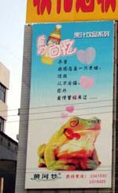
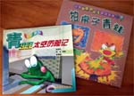
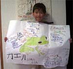
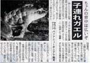
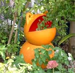
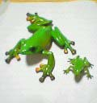

カエル大国目指す躍進中国でカエル爆発！ 【中華人民共和国蘭州発まさえ同志記者】仕事で中国を訪れ、こーんな広告を見つけてしまいましたぁぁぁ！ビルの大きさと比較して、このカエル様の大きいことがお分かりいただけるでしょうか?!
 それにしてもこの表情… すっかり目を細め、鼻の下まで伸ばしてしまって…。すっかり何の広告だか忘れてしまうほどのインパクトではありませんか。さらに、子供向けの絵本でもカエル様は大人気です。右は、カエル池のテレビ取材をしてくれと、市長に談判にいくカエル様の話、左は、かつての有名宇宙飛行士の記憶を脳に入れられ、宇宙に旅立つカエル様の話です。少し焦りすら覚える隣国の状況をお伝えしました!!! 【全国かえる奉賛会】ぐわああああ！経済成長で敗北し、いままたカエル成長でも中国に抜き去られる日が来るのであろうか。
カエル研究まっしぐら！末はカエル博士かカエル大臣だ！ 【福岡発ひさよ同志記者】連続投稿だあ。というわけで、わたくし、お盆に地元に帰省しました折り、(はるばる京都まで。)大王さまに、おみやげを買って来たのでございます。 小さいものなので、そのうちに封書にて送りますので・・・・。もち、かえるものです。 しかも、ほんとにかわいいですよぉ。ボーリングケロちゃんという６色のけしごむですの。うくく、お楽しみに。（＾＾）そして、そして。かえらーまっしぐらの母親の影響か、子供が自由研究にかえるの生態を調べました。
【全国かえる奉賛会】母親は、子供の成長に多大の影響を与えるものなり。父親がいない間に、カエル洗脳教育を施し、かえる奉賛会が政権をとった時には、その子は、『カエル大臣』にして『カエル博士』になっているであろうぞ。そのまま成長せよ！
カエルも夫婦で子育て！ 【大阪発萬里小路同士記者同志記者】 毎日新聞の８月８日木曜日の朝刊に子育てするカエルの話題が載っていました。カエルも夫婦で子育てする時代になったのか、それとも、カエルの方が早かったのか・・・・あなどれませんね！ゲコ！もういっこは、大阪は高石市にある、「ブックインミツイ高石店」という本屋さんで、カエルがちゃポンを発見しました。今日６００円もつぎ込んでしまいました。大きいのが一個とか小さいのが２個とか入ってます。制覇目指してがんばろう？？？
【全国かえる奉賛会】非カエル系新聞も、最近はカエルの話題をどんどん取り上げているので、負けてられんなーっ！毎日新聞は偉いぞおおおおっ。実は大王も、学生時代から、毎日新聞読んでいました。
 種子島でカエルを発見！！【鹿児島発けろひろ同志記者】種子島へ旅行に行きました。種子島と言えば、ロケットですよね、でもこの科学の最先端の町で見つけたんですよ、カエルくんを！！某家庭の庭先に鎮座する「カエル」は、大きく口をあけて、葉っぱを食べようとしていました。想像するに、このカエル君は漁師さんが網などに使う「浮き？」ではないかと思うのですが・・・。 kerohiro様直筆署名@..@ (----) kerohiro【全国かえる奉賛会】うわー同じ人がもひとりいたああああ。立派なカエラーの証しです！ カエルガチャポン情報が続々！ 【日本発ケロイム同志記者】 掲示板に書いたガチャガチャの「原色両生類カエル図鑑」の写真を送ります。ここまでそろえるのにずいぶんと投資しました…。だんなも協力的で会社帰りとかやってきてくれたので、きっと夫婦あわせたら結構な額かも。掲示板もこの話題でにぎわうかと思ったのですが、意外にあちこちにないものなんですね。日本の天然記念物「モリアオガエル」の本に付いていたフィギュアとの比較写真も送ります。参考にしてください。【千葉発ゆみこ同志記者】 友人がカエルのガチャポンを持ってきてくれました。カプセル内に入っていた紙にアドレスが書いてありました。 ゆうじん式動物図鑑 → もくじ → カエル＆カメ へ行って下さい。原色両生類カエル図鑑のカプセル（１つ１００円）は、全１７種類＋シークレット３種＝カエル２６匹だそうです。小さいものはカプセルに２つ入っています。 ＨＰには、シークレット３種も載っています。２００２年８月発売と書いてあるので、最近の発売のようですね。監修：奥山秀輝さんで、協力：宮島町立宮島水族館、サンシャイン国際水族館、財団法人 東京動物園協会となっています。 原色爬虫類カメ目図鑑のガチャポンは見た事があり、カエル版ってないのかなぁ〜と思っていました。やってもやってもカエルしか出てこないガチャポンて良いですよね〜。 チョコエッグなどでは、全種類のうち１つ２つしかカエルが入ってませんが、このガチャポンは全てカエルなので、なんだか大当たりした気分です。今度、友人にガチャポンのあった店に連れていってもらい、全種類集めてきます。
ちなみに、もらったカプセルからは、「イシカワガエル」「マダラヤドクガエル＋フチドリアマガエル」が出ました。特に「イシカワガエル」はキュートです。
投稿採用者に武功カエル徽章を授与！ |


かえる古新聞過去に取り上げた記事を見出し付きで一覧したい人は、ここをクリック◆創刊号を見る◆先週号を見る◆話題の号を見る◆かえる新聞の昔を読む
|
私も入っています。。全国かえる奉賛会
大王様に会うには、このバナーをクリック。ずっと奥に写真館があるぞ。全国かえる奉賛会に入会するには、自分のホームページのどこかに、下の部分を追加するとバナーがリンク付きで表示されるぞ。どんどん入会しましょー |


|